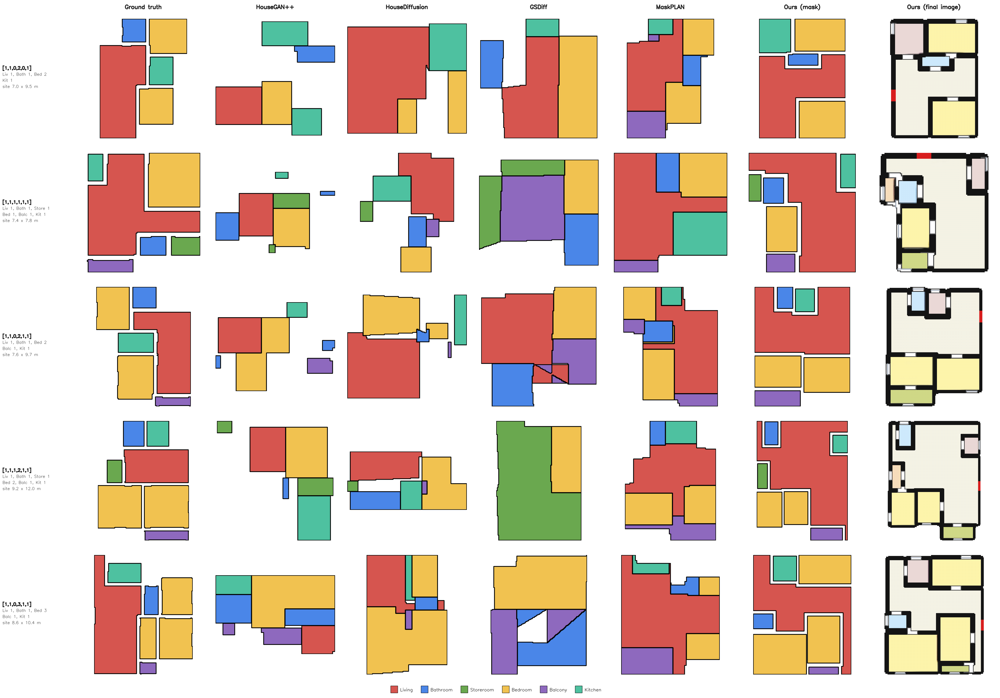

Count2Plan

Constrained Conditioned Floorplan Generation with Human-in-the-Loop Interaction
Constraint-conditioned generative models for collaborative floorplan synthesis from high-level user specifications.
- A slot-based conditional generator that dedicates each latent slot to a semantic room type, so layouts can be controlled by room counts.
- A human-in-the-loop framework that lets users refine generated layouts while the constraints stay satisfied.
- ~90% exact room-count accuracy, 100% ±1 count accuracy and 100% presence precision/recall on the evaluation benchmarks.
- Spatial topology emerges from count supervision alone, with no topological annotations.
[Code]